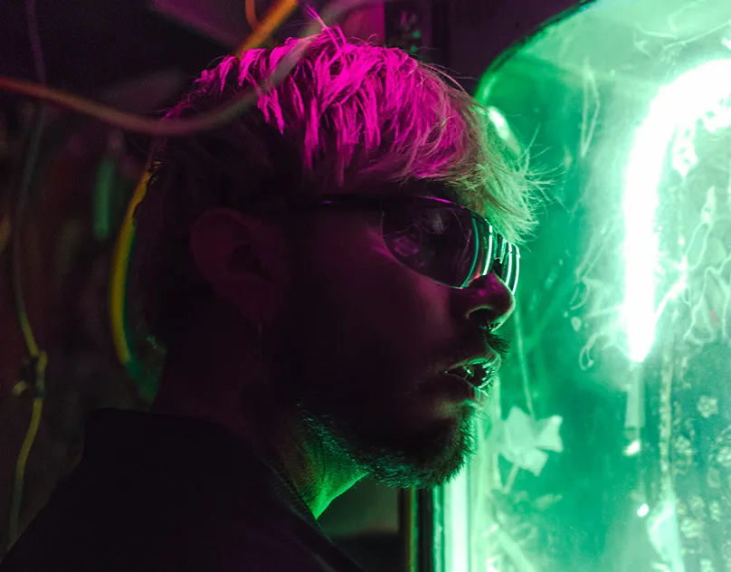
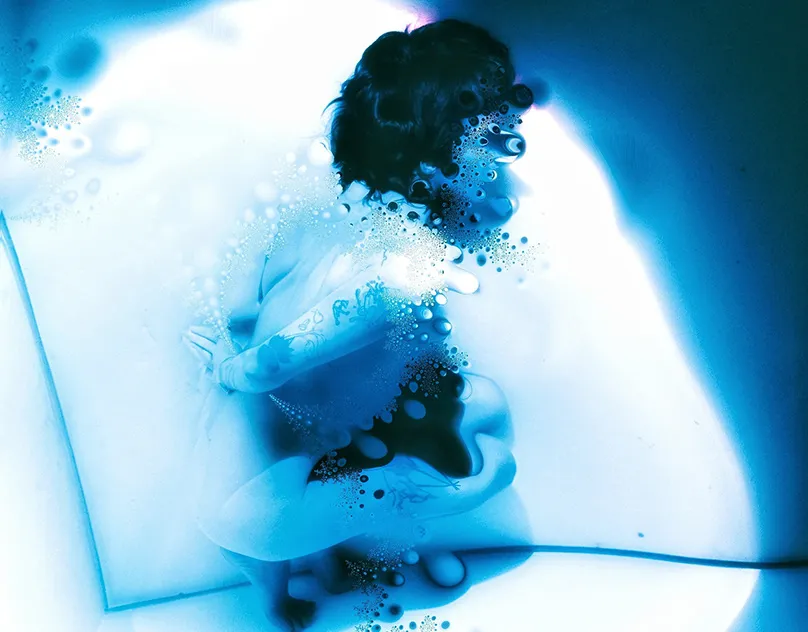
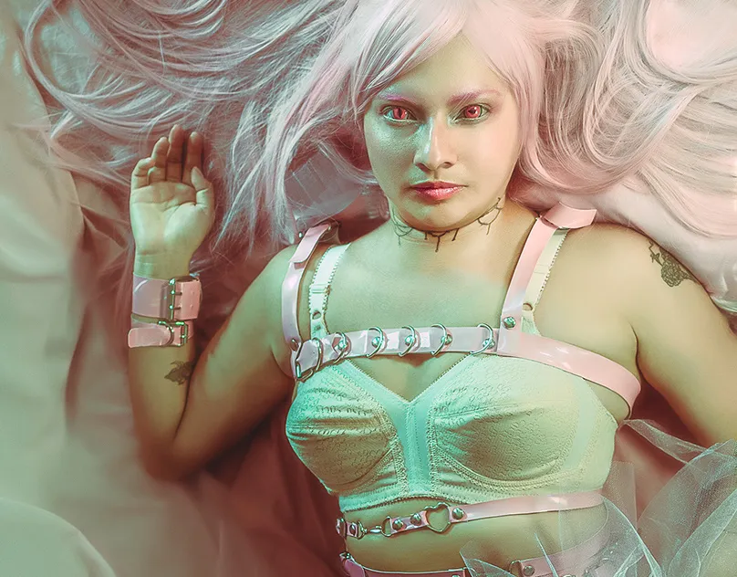
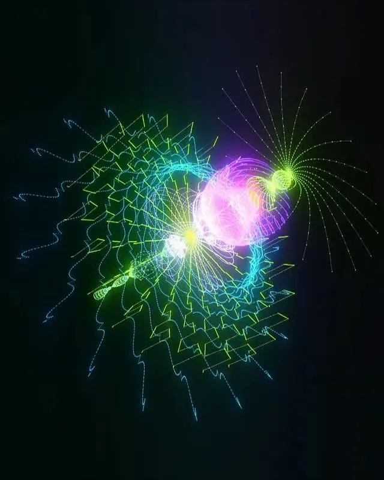
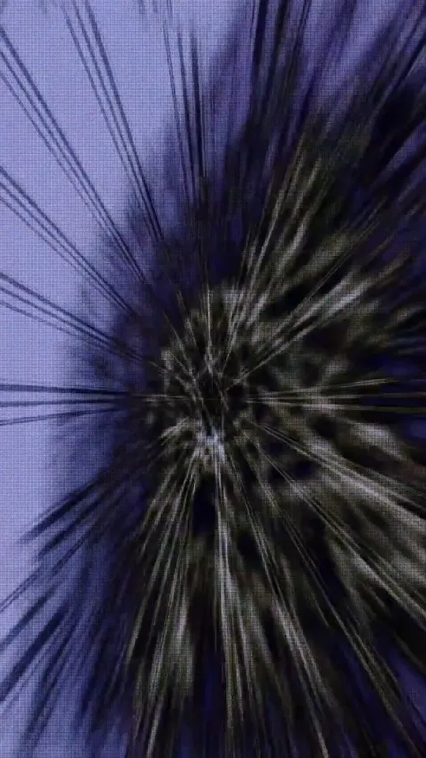
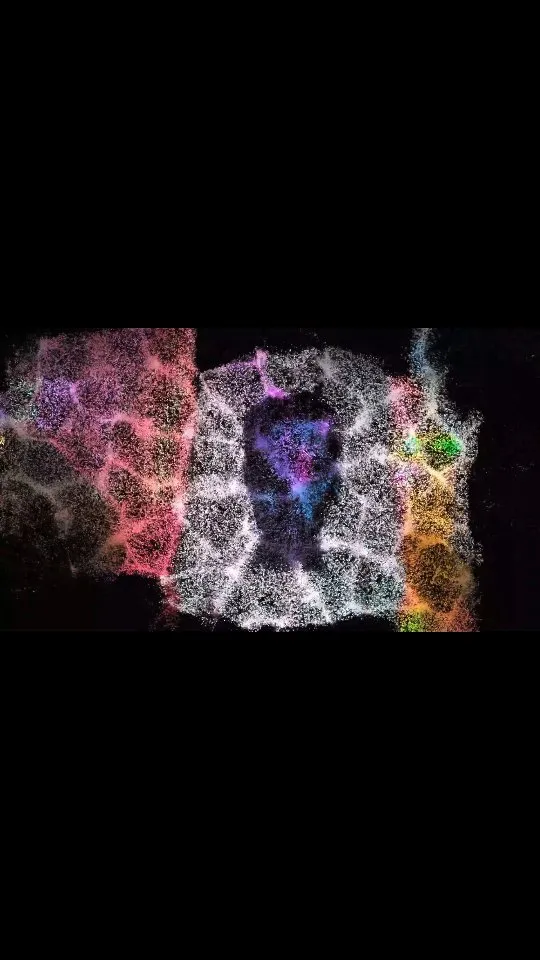
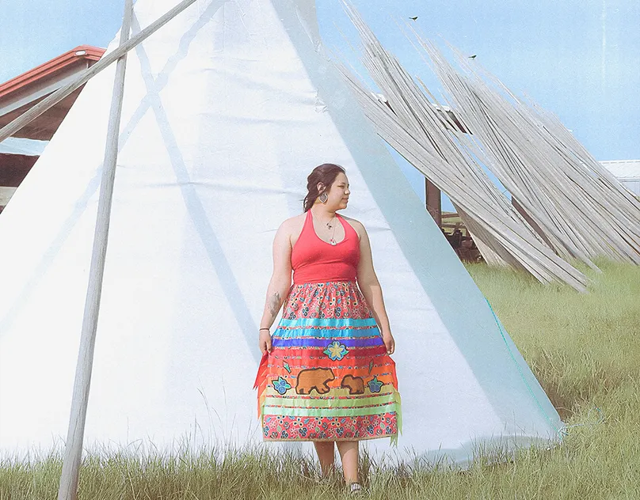
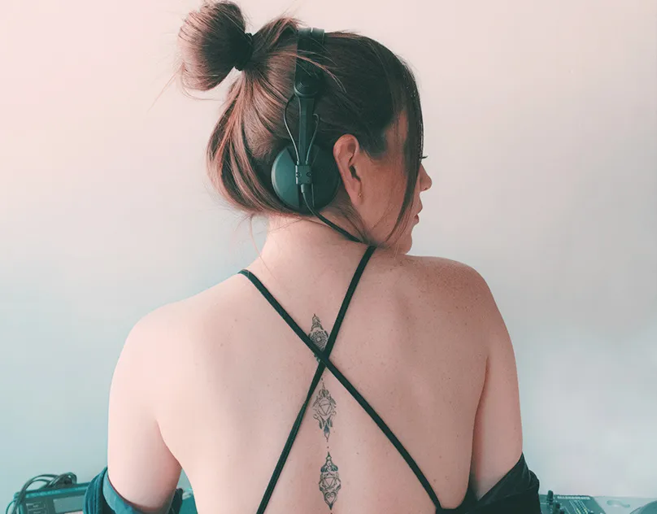
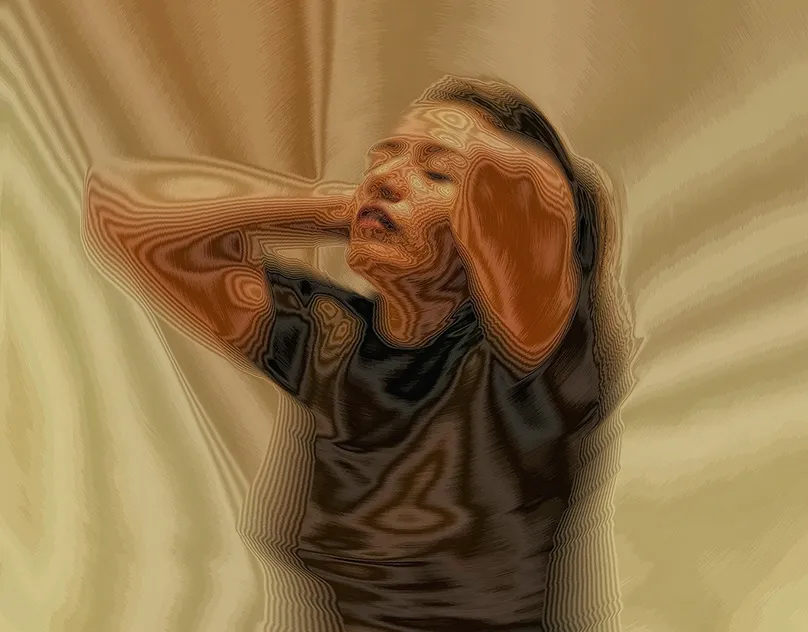

memoria
líquida
An archive of pieces about water, memory, and the things that refuse to hold their shape. Scroll — and watch what the surface keeps.
Everything here was once submerged. The images began as photographs taken under shallow water, then re-exposed, bled, and let to dry into the paper. What you read through the droplets is the same text the droplets are reading — a small lens of the page beneath them, bent and brightened, the way a bead of water on a window magnifies a single word until it floats free of its sentence.
Look long enough and the drops seem to remember a room you cannot see. On their wet skin something pale keeps drifting past — a green flare, a breath of ink, a wash of pastel — never quite the same thing twice. They are reflecting a world that moves while you scroll, the way a raindrop on a train window holds a sliver of every field it passes.
The series moves between pink-green chemistry and deep ink blue, the palette of a darkroom flooded by accident. Each frame is a held breath: a couple suspended, a neon caught in glass, a portrait softened to pastel static. Read slowly. The surface is doing half the work.
None of this is decoration — it is the work asking you to look at how looking itself distorts what is kept. A reflection is never the thing; it is the thing, plus the curve of the water, plus the time of day, plus wherever you happen to be standing when you lean in to see.





Each plate is a single exposure, never composited. The water did the collage. When the print dried, the emulsion cracked into a map of where the surface had been deepest — and it is those cracks the droplets seem to find, magnify, and quietly carry away with them as you go.
Keep scrolling. The reflections you have already passed are still up there on the glass, slowly giving way to the ones below.



